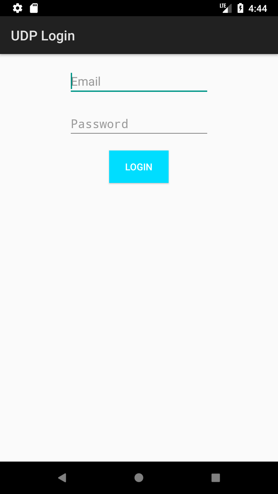
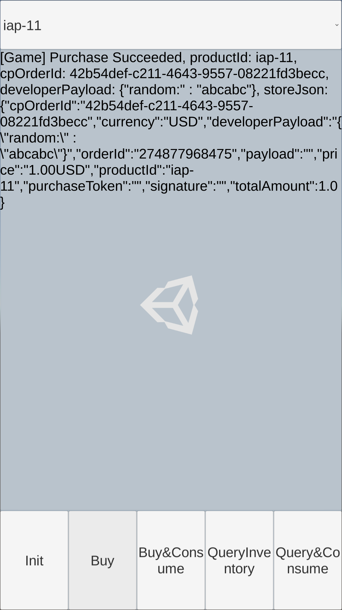

Summary: The Unity Distribution Platform (UDP) is a game distribution platform where you can store your games in the Unity repository and publish them to Unity’s partner stores collectively. The Unity SDK for UDP is an easy way to integrate your games with UDP. This docucument guides you through initializing the intergation with UDP, configuraing SDK for UDP, and performing technical intergations.
Overview#
The Unity Distribution Platform (UDP) is a game distribution platform where you can store your games in the Unity repository and publish them to Unity’s partner stores collectively. The Unity SDK for UDP is an easy way to integrate your games with UDP.
Integration with UDP#
Before you manage your game via UDP, you need to integrate your games with UDP. The integration is consisted of initialization and connection to the purchase service.
Integration with UDP for Standalone Games#
To initialize the integration with UDP, you need to provide your Unity client ID and Unity client key to the Unity SDK. The Unity SDK will trigger the initialization callback.
Integration with UDP for Online Games#
For online games, the game server can verify the login and receive purchase order callback or initiatively query purchase order to/from the Unity IAP server.
Configuring the SDK for UDP#
Before publishing your games via unity distribution platform (UDP), configure the software development kit (SDK) and test your configuration. Here are the things that you need to do:
- Generating a Unity client and test accounts
- Configuring the in-app purchase (IAP) for UDP
- Testing your configuration
Generating a Unity client and test accounts#
You can manage your games in UDP via a Unity client and test your games with test accounts. Take the following steps to generate a Unity client and test accounts:
Open Unity in the
STAGINGorPRODenvironment. In thePRODenvironment, just open the Unity Editor; inSTAGINGenvironment, open Unity with the following demands:For Mac OS:
- open /Applications/Unity/Unity.app –args -cloudEnvironment staging
For Windows:
- C:/Program Files(86)/Unity/Editor/Unity.exe –args -cloudEnvironment staging
Log in with an
STAGINGorPRODaccount. If you haven’t got a Unity account, register one in STAGING ID Portal or PROD ID Portal.Create or open a project and import the SDK.
Note: Make sure the project ID is consistent with the current environment. If not, clickUnlink projectand create a new Unity project ID.Create a
Game Settings.assetfile.
- Click the
Game Settings.assetfile underAssets > Plugins > UDP > UdpSupport > Resourcesand generate a Unity client and test accounts.
In the above screenshot, you may need to use the following fields inUDP Client Settings:
Client IDis the issued client identifier.Client RSA Public Keyis used to validate the purchase signature for UDP.Client Secretis the key to ecrypting the receipt sent to developers’ server (Callback URL).Callback URLprovides your own server to receive the stores’ callbacks.
Note: Client Key is not used currently.
Configuring the IAP for UDP#
Take the following steps to configure the IAP for UDP:
Choose
IAP Catalog(Window>Unity UDP>IAP Catalog).Input your product information and click
Create Productto sync with the server. To add more products, ClickAdd Product Draft.
Note: Specify the product price, or players can’t purchase products in game stores.
Click the
GameManagerGameObject inHierarchyand enter the slugs of your products intoProduct_1andProduct_2. You can add more products using theGameManager.csfile.
Testing the SDK for UDP#
After you complete the configuration, test the SDK for UDP, as follows:
Open the
SampleScene.sceneasset to show the demo.Build and open the demo.
Click
Initand log in with a test account.
Click
BuyorBuy&Consumeto buy products. You can see the purchase information on the user interface.
If the purchased item hasn’t been consumed, you can’t purchase it again.

Click
QueryInventoryto see all the products and purchases and clickQuery&Consumeto consume the unconsumed purchases.
Publishing your games to GSTORE#
After you have generated a Unity client and test accounts, you can publish your games to GSTORE with the test accounts.
- In the
Inspectortab of theGameSetting.assetfile, clickEdit Game Information on Portal. - Choose your game in the Portal and fill in the game information.
- Choose
PUBLISH GAME>Test Accounts. - Click
SYNC to GPlayto sync your test accounts to GSTORE.
Note: You can only publish your games to GSTORE when you have a GSTORE account. - Click
New Publishand follow the instructions.
Technical Integration#
Client-Side Integration#
The client-side integration is consisted of the following steps:
- Initializing the integration
- Setting up the purchase listener
- Setting up the purchase
- Setting up the consuming
- Setting up the query inventory
Initializing the Integration#
To initialize the UDP SDK, Call StoreService.Initialize() with AppInfo and IInitCallback.1
StoreService.Initialize(AppInfo, IInitCallback)
If you create a client using the Game Settings.asset file, AppInfo can be retrieved by reading the file.1
2
3
4
5
6AppInfo appInfo = new AppInfo();
AppStoreSettings appStoreSettings = Resources.Load<AppStoreSettings>("GameSettings");
appInfo.AppSlug = appStoreSettings.AppSlug;
appInfo.ClientId = appStoreSettings.UnityClientID;
appInfo.ClientKey = appStoreSettings.UnityClientKey;
appInfo.RSAPublicKey = appStoreSettings.UnityClientRSAPublicKey;
Otherwise, AppInfo must be filled manually (for Unity whose version is lower than 5.6.1).
InitListener notifies you whether the initialization succeeds.1
2
3
4
5
6
7
8
9
10
11
12
13
14public class InitCallback : IInitListener
{
public void OnInitialized(UserInfo userInfo)
{
Debug.Log("Initialization suceeded");
// Developers can call queryInventory here
// to see if there are purchases needed to be consumed
}
public void OnInitializeFailed(string message)
{
Debug.Log("Initialization failed: " + message);
}
}
Setting up purchase listener#
IPurchaseListener is the listener that tells you the result of all purchase-related events.
1 | public class PurchaseCallback : IPurchaseListener |
Setting up the purchase#
productId is the what the player wants to buy.cpOrderId is a unique order id defined by yourself. If you can pass a null, UDP SDK generates a UUID automatically.developerPayload is whatever you want to pass and it will be passed back after the purchase is finished.
1 | StoreService.Purchase("productId", "cpOrderId", "developerPayload", PurchaseCallback); |
Setting up the consuming#
The consuming is used to make sure purchases are successful. After a successful consuming, a consumable product is delivered to the player.
1 | StoreService.ConsumePurchase(PurchaseInfo, IPurchaseListener); |
PurchaseInfo should be the one returned by OnPurchase.
Setting up the querying inventory#
1 | StoreService.QueryInventory(productIds, callback); |
QueryInventory will return the information of products passed as the argument. Also, it will return all the purchaes which are not consumed. Developers could call this method after a successful initialization in case that some purchases are paid but the products are not delivered due to app crash.
Client-Side Validation#
UDP performs the client-side validation automatically. When partner stores return the payload and signature after a successful purchase, UDP SDK validates the signature. If the validation fails, the purchase fails accordingly.
Server-Side Integration#
Callback Notification#
The Unity Channel server notifies the game server with the payment result. Implement the HTTP GET and accept the following query parameters.
| Attribute Name | Required? | Description | Format |
|---|---|---|---|
| payload | Yes | the order content which is in Json String format (details can be seen in the table below) | Json String |
| signature | Yes | RSA signature with the payload | String |
| certificate | Yes | X.509 certificate that contains the RSA public key for the signature | Base64 encoded String |
Using the certificate#
You can verify the certificate using the Unity Client RSA Public Key. If the certificate pass the verification, extract the RSA public key from the certificate and use this key to verify the payload with the signature by SHA1 algorithm.
Here is the code sample in Java:
1 | import java.util.Base64; |
payload content:
Here is the content of payload JSON.
| Attribute Name | Required? | Description | Format | Sample |
|---|---|---|---|---|
| cpOrderId | Yes | order id assigned by Game | String | 66mea52wne |
| status | Yes | status of the orderAttempt | String | SUCCESS |
| amount | Yes | pay fee of this order | String | 1 |
| productId | Yes | product id of the product associated with the order | String | Product_1 |
| payTime | Yes | order paid time | ISO8601 yyyy-MM-ddThh:mm:ssZ, UTC timezone | 2017-03-08T06:43:20Z |
| country | Yes | country | ISO 3166-2 | US |
| currency | Yes | currency | ISO 4217 or cryptocurrency type | USD |
| cryptocurrency | Yes | if the currency is cryptocurrency | Boolean | False |
| quantity | Yes | quantity of the product | Integer | 1 |
| clientId | Yes | client id returned after Game onboarding to Unity IAP | String | P-wU0n9pbyQ1ulks4kHX_Q |
| extension | No | extesion | String | “{\”abc\” : \”123\”}” |
Acknowledgement Callback#
You only need to set up Acknowledgement Callback when you integrate with Gstore. Otherwise you can choose not to configure the integration.
1 | GET |
| Attribute Name | Required? | Description | Format | Sample |
|---|---|---|---|---|
| cpOrderId | Yes | order id assigned by game , or Unity generated id if game will not generate it | String | 66mea52wne |
| clientId | Yes | client id assigned by Unity after onboarding | String | Q4AnJDW2-rxLAPujqrk1zQ |
| orderQueryToken | Yes | order query token returned by client SDK when finishing purchase | String | ebaseakc= |
| sign | Yes | md5 with cpOrderId, clientId, orderQueryToken and Unity Client Secret. Check the algorithm in the end of the doc | String | 7277da780d1102864ee5818c2730c74e |
1 | Response: Status 200 |